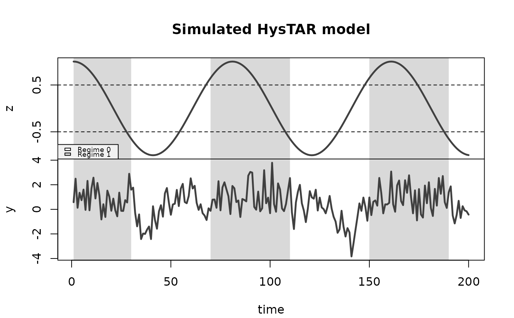

With this function, you can simulate observations from the HysTAR model, given its parameter values.
Usage
hystar_sim(z, r, d, phi_R0, phi_R1, resvar = c(1, 1), start_regime = NULL)Arguments
- z
A numeric vector representing the observed threshold variable. You can simulate
zwithz_sim(). Can not have missing values.- r
A numeric vector of length 2, representing the threshold values \(r_0\) and \(r_1\). The values must be inside the range of z, that is, larger than
min(z)and smaller thanmax(z). Otherwise, only one regime will be active so you might as well simulate an AR process, e.g. witharima.sim(). If you simulatedzwithz_sim()andstart_hyst = TRUE, make sure to set the threshold values around the middle of the range ofz, otherwise, the start will not be hysteretic.- d
A positive whole number representing the value of the delay parameter. It must be smaller than
length(z).- phi_R0
A vector containing the constant and autoregressive parameters \((\phi_0^{(0)}, \phi_1^{(0)}, \dots, \phi_{p_0}^{(0)})\) of Regime 0. Note that the first value of this vector is always interpreted as the constant, so for an AR(1) process with no constant, you must use
phi_R0 = c(0, .5), for example. Both orders must be smaller thanlength(z). For valid standard errors of the estimates inhystar_fit(), the coefficients should imply thatyis stationary, see Details.- phi_R1
The same as
phi_R0, but for Regime 1.- resvar
A numeric vector of length 2 representing the variances of the residuals \(\sigma_{(0)}^2\) and \(\sigma_{(1)}^2\). The residuals are sampled from a normal distribution in the current implementation, but note that the model is defined for any i.i.d. vector of residuals with zero mean and finite variance.
- start_regime
Optionally, a 0 or 1 that indicates which regime should be the first, in case the
zvariable starts in the hysteresis zone. This is only necessary when you use your 'own'zvariable ANDzstarts in the hysteresis zone. A vectorzsimulated withz_sim()will contain information about if the start is hysteretic and what the starting regime is supposed to be (in theattributes()ofz).
Value
A list of class hystar_sim with elements
$data, adata.framewithlength(z)rows and 4 columns:y, the outcome variablez, the threshold variableH, a logical vector that indicates at which time points the hysteresis effect is happening. Note that this vector starts withNA(s), since the first \(d\) time points have no values observed for \(z_{t-d}\).R, the regime indicator vector.
$thresholds, a numeric vector with the two threshold values,$d, the delay parameter,$phi, a numeric vector containing the coefficients. The names are such thatphi_R1_2represents \(\phi_{2}^{(1)}\), the second lag autoregressive coefficient in Regime 1,$orders, a numeric vector containing the two orders, and$resvar, a numeric vector with the residual variances of both regimes.
Implemented generics for the hystar_sim class:
plot()plots thezvariable and theyvariable above one another. Shading of the background visualizes the regimes. Thresholds are drawn as horizontal lines in thezplot. You can provide regime_names (char vector of 2), main (char vector of 1), xlab (char vector of 1) and ylab (char vector of 2).summary()gives an overview of the true parameter values that were used.print()prints the parameter values within the mathematical representation of the model. Note that the scalar multiplied withe[t]is the standard deviation of the residuals, not the variance. See also the model definition above.
Details
Some details:
To simulate
y, 50 burn-in samples according the starting regime are used.The coefficients imply a stationary process of \(y_t\) if \(\sum_{i=1}^{p_0} \phi_i^{(0)} < 1\) and \(\sum_{i=1}^{p_1} \phi_i^{(1)} < 1\). See Zhu, Yu and Li (2013), p5.
The HysTAR model
The HysTAR model is defined as:
\( y_t = \begin{cases} \phi_{00} + \phi_{01} y_{t-1} + \cdots + \phi_{0 p_0} y_{t-p_0} + \sigma_{0} \epsilon_{t} \quad \mathrm{if}~R_{t} = 0 \\ \phi_{10} + \phi_{11} y_{t-1} + \cdots + \phi_{1 p_1} y_{t-p_1} + \sigma_{1} \epsilon_{t} \quad \mathrm{if}~R_{t} = 1, \\ \end{cases} \)
with \( R_t = \begin{cases} 0 \quad \quad \mathrm{if} \, z_{t-d} \in (-\infty, r_{0}] \\ R_{t-1} \quad \mathrm{if} \, z_{t-d} \in (r_0, r_1] \\ 1 \quad \quad \mathrm{if} \, z_{t-d} \in (r_1, \infty), \\ \end{cases} \)
where \(p_j\) denotes the order of regime \(j \in \{0,1\}\) with coefficients \(\phi_{j0}, \dots, \phi_{j p_j \in (-1, 1)}\), \(\sigma_{j}\) is the standard deviation of the residuals, and \(d \in \{0, 1, 2, \dots\}\) is a delay parameter. The parameters of primary interest are the thresholds \(r_0 \le r_1\). We let \(t = 0, 1, 2, ..., T\), where \(T\) is the number of observations.
References
Li, Guodong, Bo Guan, Wai Keung Li, en Philip L. H. Yu. ‘Hysteretic Autoregressive Time Series Models’. Biometrika 102, nr. 3 (september 2015): 717–23.
Zhu, Ke, Philip L H Yu, en Wai Keung Li. ‘Testing for the Buffered Autoregressive Process’. Munich Personal RePEc Archive, (november 2013).
Examples
z <- z_sim(n_t = 200, n_switches = 5, start_regime = 1)
sim <- hystar_sim(z = z, r = c(-.5, .5), d = 2, phi_R0 = c(0, .6), phi_R1 = 1)
plot(sim)

fit <- hystar_fit(sim$data)
summary(fit)
#> HysTAR model fitted on 199 observations, of which
#> 85 observations in regime 0 and
#> 114 observations in regime 1.
#>
#> Estimated thresholds:
#> r0 r1
#> -0.733 0.619
#>
#> Estimated delay:
#> 0
#>
#> Estimated model coefficients:
#> est SE p
#> phi_00 -0.095 0.104 0.359
#> phi_01 0.622 0.081 0.000
#> phi_10 1.045 0.133 0.000
#> phi_11 -0.075 0.093 0.419
#>
#> Estimated residual variances:
#> sigma2_0 sigma2_1
#> 0.906 1.150
#>
#> Residuals:
#> min 1q median 3q max
#> -2.567 -0.736 -0.218 0.786 2.722
#>
#> Information criteria:
#> aic aicc bic
#> 19.54441 20.05889 35.08096
#>